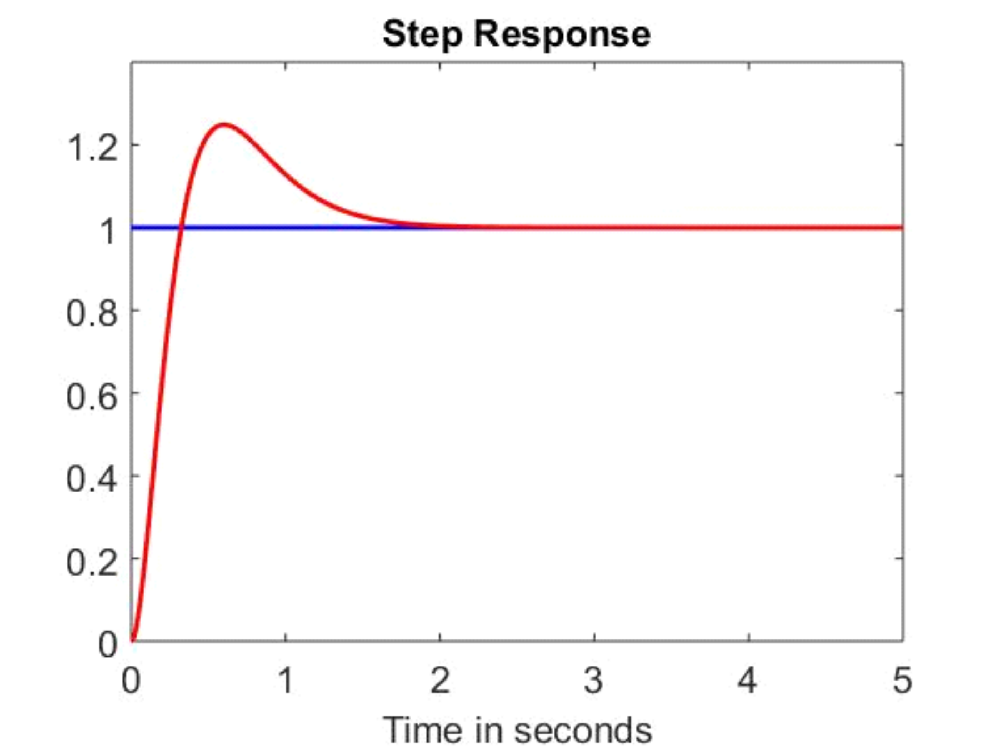
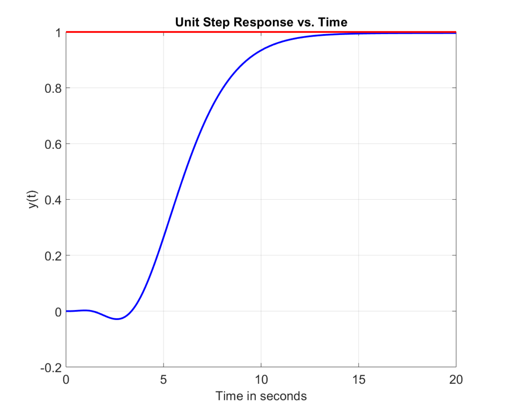

Pole Placement, 2-DoF Controllers, and Internal Stability
System Modeling and Control · Chapter 10
Pole Placement for a Second-Order Control System (continued)

Set \(s^{3}+(a+a_{0})s^{2}+(aa_{0}+bb_{1})s+bb_{0}=s^{3}+f_{2}s^{2} +f_{1}s+f_{0}.\)
Equate powers of \(s\):
\[ \begin{aligned} bb_{0} & =f_{0}\\ aa_{0}+bb_{1} & =f_{1}\\ a+a_{0} & =f_{2} \end{aligned} \]
or
\[ \begin{aligned} b_{0} & =f_{0}/b\\ a_{0} & =f_{2}-a\\ b_{1} & =\frac{f_{1}-aa_{0}}{b}=\frac{f_{1}-af_{2}+a^{2}}{b}. \end{aligned} \]
Disturbance Rejection for a Second-Order Control System

Set \(G_{c}(s)=\dfrac{b_{c}(s)}{a_{c}(s)}=\underset{\bar{G}_{c} (s)}{\underbrace{\dfrac{b_{2}s^{2}+b_{1}s+b_{0}}{s+a_{0}}}}\dfrac{1}{s}.\)
\(G_{c}(s)\) must have the factor \(1/s\) to satisfy the internal model principle.
The denominator of \(\bar{G}_{c}(s)\) has degree one less than the denominator of \(G(s).\)
The numerator of \(G_{c}(s)\) has the same degree as its denominator.
\[ \begin{aligned} E_{D}(s)=\frac{G(s)}{1+G_{c}(s)G(s)}\frac{D_{0}}{s} & =\frac{\dfrac {b}{s(s+a)}}{1+\dfrac{b_{2}s^{2}+b_{1}s+b_{0}}{s+a_{0}}\dfrac{1}{s}\dfrac {b}{s(s+a)}}\frac{D_{0}}{s}\\ & =\frac{s(s+a_{0})b}{s^{2}(s+a_{0})(s+a)+bb_{2}s^{2}+bb_{1}s+bb_{0}} \frac{D_{0}}{s}\\ & =\frac{(s+a_{0})b}{s^{4}+(a+a_{0})s^{3}+(aa_{0}+bb_{2})s^{2}+bb_{1}s+bb_{0} }D_{0}. \end{aligned} \]
Tracking a Sinusoid (continued)

\[ \begin{aligned} \!\!\!\!\!E(s)\!\!\! & =\!\!\!\frac{1}{1+G_{c}(s)G(s)}R(s)\\ & \\ \!\!\! & =\!\!\!\frac{1}{1+\dfrac{b_{3}s^{3}+b_{2}s^{2}+b_{1}s+b_{0}} {s+a_{0}}\dfrac{1}{s^{2}+1}\dfrac{b}{s(s+a)}}\frac{R_{0}}{s^{2}+1}\\ & \\ \!\!\! & =\!\!\!\frac{(s+a_{0})s(s+a)(s^{2}+1)}{(s+a_{0})s(s+a)(s^{2} +1)+bb_{3}s^{3}+bb_{2}s^{2}+bb_{1}s+bb_{0}}\frac{R_{0}}{s^{2}+1}\\ & \\ \!\!\! & =\!\!\!\frac{(s+a_{0})s(s+a)}{s^{5}+(a+a_{0})s^{4}+(aa_{0} +bb_{3}+1)s^{3}+(a+a_{0}+bb_{2})s^{2}+(aa_{0}+bb_{1})s+bb_{0}}R_{0}. \end{aligned} \]
\(s^{5}+f_{4}s^{4}+f_{3}s^{3}+f_{2}s^{2}+f_{1}s+f_{0}\) is the desired denominator of \(E(s).\)
Tracking a Sinusoid (continued)

\[ \begin{aligned} & \!\!\!\!\!\!\!\!\!\!\!\!\!\!\!\!\!\!\!\!\!\!\!\!\!\!\!\!\!\!\!\!\!\!\!\!\!\!\!\!\!\!s^{5} +(a+a_{0})s^{4}+(aa_{0}+bb_{3}+1)s^{3}+(a+a_{0}+bb_{2})s^{2}+(aa_{0} +bb_{1})s+bb_{0}\\ & \\ & \quad\qquad\qquad=\quad s^{5}+f_{4}s^{4}+f_{3}s^{3}+f_{2}s^{2}+f_{1}s+f_{0}. \end{aligned} \]
This requires setting
\[ \begin{aligned} b_{0} & =\frac{f_{0}}{b}\\ a_{0} & =f_{4}-a\\ b_{1} & =\frac{f_{1}-aa_{0}}{b}=\frac{f_{1}-af_{4}+a^{2}}{b}\\ b_{2} & =\frac{f_{2}-a-a_{0}}{b}=\frac{f_{2}-f_{4}}{b}\\ b_{3} & =\frac{f_{3}-aa_{0}-1}{b}=\frac{f_{3}-af_{4}+a^{2}+1}{b}. \end{aligned} \]
Pole Placement

\(R(s)=\dfrac{R_{0}}{s},D(s)=\dfrac{D_{0}}{s}\) and \(G_{c}(s)=\underset{\bar {G}_{c}(s)}{\underbrace{\dfrac{b_{2}s^{2}+b_{1}s+b_{0}}{s+a_{0}}}}\dfrac{1} {s}.\)
\(G_{c}(s)\) must have factor \(\dfrac{1}{s}\) to satisfy the internal model principle.
The denominator of \(\bar{G}_{c}(s)\) has degree one less than the denominator of \(G(s).\)
The numerator of \(G_{c}(s)\) has the same degree as its denominator.
\[ \begin{aligned} \!\!\!E_{R}(s)=\frac{1}{1+G_{c}(s)G(s)}R(s) & =\!\!\!\frac{1}{1+\dfrac {b_{2}s^{2}+b_{1}s+b_{0}}{s+a_{0}}\dfrac{1}{s}\dfrac{s-2}{(s-1)(s-3)}} \frac{R_{0}}{s}\\ & \\ & =\!\!\!\frac{s(s+a_{0})(s-1)(s-3)}{s(s+a_{0})(s-1)(s-3)+(b_{2}s^{2} +b_{1}s+b_{0})(s-2)}\frac{R_{0}}{s}. \end{aligned} \]
Pole Placement (continued)

\[ \begin{aligned} E_{R}(s) & =\frac{s(s+a_{0})(s-1)(s-3)}{s(s+a_{0})(s-1)(s-3)+(b_{2} s^{2}+b_{1}s+b_{0})(s-2)}\frac{R_{0}}{s}\\ & \\ & =\frac{(s+a_{0})(s-1)(s-3)}{s^{4}+(b_{2}+a_{0}-4)s^{3}+(b_{1}-2b_{2} -4a_{0}+3)s^{2}+(3a_{0}+b_{0}-2b_{1})s-2b_{0}}R_{0}. \end{aligned} \]
Set
\[ s^{4}+(b_{2}+a_{0}-4)s^{3}+(b_{1}-2b_{2}-4a_{0}+3)s^{2}+(3a_{0}+b_{0} -2b_{1})s-2b_{0}= \]
\(\quad\quad\quad\!\!\!s^{4}+f_{3}s^{3}+f_{2}s^{2}+f_{1}s+f_{0}.\)
In matrix form: \(\left[ \begin{array}{c} f_{3}\\ f_{2}\\ f_{1}\\ f_{0} \end{array} \right] =\left[ \begin{array}{rrrr} 1 & 0 & 0 & 1\\ -2 & 1 & 0 & -4\\ 0 & -2 & 1 & 3\\ 0 & 0 & -2 & 0 \end{array} \right] \!\left[ \begin{array}{c} b_{2}\\ b_{1}\\ b_{0}\\ a_{0} \end{array} \right] +\left[ \begin{array}{r} -4\\ 3\\ 0\\ 0 \end{array} \right] .\)
Pole Placement (continued)

To put the closed-loop poles at \(-r_{1},-r_{2},-r_{3},-r_{4}\) we simply set
\[ \begin{aligned} s^{4}+f_{3}s^{3}+f_{2}s^{2}+f_{1}s+f_{0} & =(s+r_{1})(s+r_{2})(s+r_{3} )(s+r_{4})\\ & \\ & =s^{4}+\underset{f_{3}}{\underbrace{(r_{1}+r_{2}+r_{3}+r_{4})}}s^{3}+\\ & \underset{f_{2}}{\underbrace{(r_{1}r_{2}+r_{1}r_{3}+r_{1}r_{4}+r_{2} r_{3}+r_{2}r_{4}+r_{3}r_{4})}}s^{2}+\\ & \underset{f_{1}}{\underbrace{\left( r_{1}r_{2}r_{3}+r_{1}r_{2}r_{4} +r_{1}r_{3}r_{4}+r_{2}r_{3}r_{4}\right) }}s+\underset{f_{0} }{\underbrace{r_{1}r_{2}r_{3}r_{4}}} \end{aligned} \]
Let \(G_{c}(s)=\dfrac{-2s+13}{s+7}\) to put all 3 closed-loop poles at \(-1.\)
\[ \begin{aligned} Y(s) & =G(s)U(s)+\frac{sy(0)+\dot{y}(0)-2y(0)-u(0)}{s^{2}-2s+2}\\ & \\ & =G(s)G_{c}(s)\!\left( R(s)-Y(s)\right) +\frac{sy(0)+\dot {y}(0)-2y(0)-u(0)}{s^{2}-2s+2} \end{aligned} \]
\[ \begin{aligned} & \Longrightarrow\left( 1+G(s)G_{c}(s)\right) \!\!Y(s)=G(s)G_{c}(s)R(s)+\frac{sy(0)+\dot{y}(0)-2y(0)-u(0)}{s^{2}-2s+2}\\ & \\ & \Longrightarrow Y(s)=\frac{G(s)G_{c}(s)}{1+G(s)G_{c}(s)} R(s)+\underset{Y_{IC}(s)}{\underbrace{\frac{1}{1+G(s)G_{c}(s)}\frac {sy(0)+\dot{y}(0)-2y(0)-u(0)}{s^{2}-2s+2}}}. \end{aligned} \]
Inverted Pendulum (continued)

Previous slide:
\[ Y(s)=-G_{Y}(s)G_{c}(s)Y(s)+\frac{p_{Y}(s)}{s^{2}(s^{2}-\alpha^{2})}. \]
Solve for \(Y(s)\) to obtain
\[ \begin{aligned} Y(s) & =\frac{1}{1+G_{Y}(s)G_{c}(s)}\frac{p_{Y}(s)}{s^{2}(s^{2}-\alpha^{2} )}\\ & =\frac{1}{1+\dfrac{b_{3}s^{3}+b_{2}s^{2}+b_{1}s+b_{0}}{s^{3}+a_{2} s^{2}+a_{1}s+a_{0}}\dfrac{-\kappa mg\ell}{s^{2}(s^{2}-\alpha^{2})}}\frac {p_{Y}(s)}{s^{2}(s^{2}-\alpha^{2})}\\ & =\frac{(s^{3}+a_{2}s^{2}+a_{1}s+a_{0})p_{Y}(s)}{(s^{3}+a_{2}s^{2} +a_{1}s+a_{0})s^{2}(s^{2}-\alpha^{2})+\left( -\kappa mg\ell\right) (b_{3}s^{3}+b_{2}s^{2}+b_{1}s+b_{0})}. \end{aligned} \]
Inverted Pendulum (continued)

In matrix form we have
\[ \left[ \begin{array}{ccccccc} -\kappa mg\ell & 0 & 0 & 0 & 0 & 0 & 0\\ 0 & -\kappa mg\ell & 0 & 0 & 0 & 0 & 0\\ 0 & 0 & -\kappa mg\ell & 0 & -\alpha^{2} & 0 & 0\\ 0 & 0 & 0 & -\kappa mg\ell & 0 & -\alpha^{2} & 0\\ 0 & 0 & 0 & 0 & 1 & 0 & -\alpha^{2}\\ 0 & 0 & 0 & 0 & 0 & 1 & 0\\ 0 & 0 & 0 & 0 & 0 & 0 & 1 \end{array} \right] \left[ \begin{array}{c} b_{0}\\ b_{1}\\ b_{2}\\ b_{3}\\ a_{0}\\ a_{1}\\ a_{2} \end{array} \right] =\left[ \begin{array}{c} f_{0}\\ f_{1}\\ f_{2}\\ f_{3}\\ f_{4}\\ f_{5}+\alpha^{2}\\ f_{6} \end{array} \right] . \]
This matrix is invertible so we can solve for \(a_{0},a_{1},a_{2},b_{0} ,b_{1},b_{2},b_{3}.\)
Inverted Pendulum (continued)

Quanser inverted pendulum: \(\kappa mg\ell=36.5705,\alpha^{2}=29.256\) so
\[ G_{Y}(s)=\frac{-36.5705}{s^{2}(s^{2}-29.256)}=\frac{-36.5705}{s^{2} (s+5.4089)(s-5.4089)}. \]
Choosing the seven closed-loop poles to be at \(-5\) results in
\[ \begin{aligned} G_{c}(s) & =-\frac{1041.6s^{3}+6113.7s^{2}+2990.8s+2136.3}{s^{3} +35s^{2}+554.3s+5399}\\ & \\ & =-\frac{1041.6(s+5.4088)(s^{2}+0.4308s+0.3792)}{(s+20.833)(s^{2} +14.1672s+259.1533)}. \end{aligned} \]
This controller has small stability margins making it very sensitve to disturbances.
Small disturbances can cause \(\theta(t)\) to go far from \(0.\)
\(G_{Y}(s)\) is then no longer a valid approximation of the nonlinear IP model.
\(G_{c}(s)\) will not be able to bring \(\theta(t)\) back to \(0.\)
- Let’s first look at making the closed-loop system stable.
\[ E_{R}(s)=\frac{1}{1+K\dfrac{s+\alpha}{s}\dfrac{1}{s+1+K_{t}}\dfrac{1}{s} }R(s)=\frac{s^{2}(s+1+K_{t})}{s^{3}+(1+K_{t})s^{2}+Ks+\alpha K}R(s) \]
Choose the closed-loop poles to be \(-r_{1},-r_{2},-r_{3}\) with \(r_{1}>0,r_{2}>0,r_{3}>0.\)
\[ \begin{aligned} s^{3}+(1+K_{t})s^{2}+Ks+\alpha K\!\!\! & =\!\!\!(s+r_{1})(s+r_{2})(s+r_{3})\\ \!\!\! & =\!\!\!s^{3}+(r_{1}+r_{2}+r_{3})s^{2}+(r_{1}r_{2}+r_{1}r_{3} +r_{2}r_{3})s+r_{1}r_{2}r_{3}. \end{aligned} \]
\[ \Longrightarrow\quad{}K_{t}=r_{1}+r_{2}+r_{3}-1,\quad{}K=r_{1} r_{2}+r_{1}r_{3}+r_{2}r_{3},\text{ }\alpha=\frac{r_{1}r_{2}r_{3}}{K} =\frac{r_{1}r_{2}r_{3}}{r_{1}r_{2}+r_{1}r_{3}+r_{2}r_{3}}. \]
\[ \begin{aligned} C_{R}(s)=\frac{K\dfrac{s+\alpha}{s}\dfrac{1}{s+1+K_{t}}\dfrac{1}{s}} {1+K\dfrac{s+\alpha}{s}\dfrac{1}{s+1+K_{t}}\dfrac{1}{s}}\frac{R_{0}}{s} & =\frac{K(s+\alpha)}{s^{3}+(1+K_{t})s^{2}+Ks+\alpha K}\frac{R_{0}}{s}\\ & =\frac{K(s+\alpha)}{(s+r_{1})(s+r_{2})(s+r_{3})}\frac{R_{0}}{s}. \end{aligned} \]
\(sC_{R}(s)\) is stable so by the FVT
\[ c_{R}(\infty)=\lim_{s\rightarrow0}sC_{R}(s)=\lim_{s\rightarrow0} s\frac{K(s+\alpha)}{s^{3}+(1+K_{t})s^{2}+Ks+\alpha K}\frac{R_{0}}{s}=R_{0}. \]
- Problem: \(c_{R}(t)\) will exhibit overshoot.
\[ C_{R}(s)=\frac{K\dfrac{s+\alpha}{s}\dfrac{1}{s+1+K_{t}}\dfrac{1}{s}} {1+K\dfrac{s+\alpha}{s}\dfrac{1}{s+1+K_{t}}\dfrac{1}{s}}\frac{R_{0}}{s} =\frac{K(s+\alpha)}{(s+r_{1})(s+r_{2})(s+r_{3})}\frac{R_{0}}{s}. \]

- With this control architecture, there will always be overshoot as we explain next.
Theorem Stable Systems with Real Poles and No Zeros Do Not Have Overshoot
Let a system satisfy the following conditions:
(1) The closed-loop transfer function is stable.
(2) The closed-loop transfer function has real poles.
(3) The closed-loop transfer function has no zeros.
Then its step response has no overshoot.
Proof: See Appendix.
Right Half-Plane Zero (continued)
\(R(s)=\dfrac{R_{0}}{s},G_{c}(s)=\dfrac{b_{1}s+b_{0}}{s+a_{0}}.\)
\(E(s)=\dfrac{(s+2)(s+a_{0})}{s^{3}+(a_{0}-b_{1}+2)s^{2}+(2a_{0}-b_{0} +b_{1})s+b_{0}}R_{0}.\)
Let the desired closed-loop poles be at \(-r_{1},-r_{2},-r_{3}.\)
\[ \begin{aligned} & \!\!\!\!\!\!\!\!\!\!\!\!\!\!\!\!\!\!\!\!\!\!\!\!\!\!\!\!\!\!\!\!\!\!\!\!\!\!\!\!\!\!\!\!\!\!s^{3} +(a_{0}-b_{1}+2)s^{2}+(2a_{0}-b_{0}+b_{1})s+b_{0}\\ & =(s+r_{1})(s+r_{2})(s+r_{3})\\ & =s^{3}+(r_{1}+r_{2}+r_{3})s^{2}+(r_{1}r_{2}+r_{1}r_{3}+r_{2}r_{3} )s+r_{1}r_{2}r_{3}. \end{aligned} \]
Solve:
\[ \begin{aligned} a_{0}-b_{1}+2 & =r_{1}+r_{2}+r_{3}\\ 2a_{0}+b_{1}-b_{0} & =r_{1}r_{2}+r_{1}r_{3}+r_{2}r_{3}\\ b_{0} & =r_{1}r_{2}r_{3} \end{aligned} \]
Two Right Half-Plane Zeros

With \(\dfrac{b_{2}s^{2}+b_{1}s+b_{0}}{s+a_{0}}\dfrac{1}{s}\) we previously showed that
\[ \begin{aligned} C(s) & =\frac{G_{c}(s)G(s)}{1+G_{c}(s)G(s)}R(s)\\ & =\frac{(b_{2}s^{2}+b_{1}s+b_{0})(s-2)}{s^{4}+(a_{0}+b_{2}-4)s^{3} +(b_{1}-4a_{0}-2b_{2}+3)s^{2}+(3a_{0}+b_{0}-2b_{1})s-2b_{0}}\frac{R_{0}}{s}\\ & =\frac{(b_{2}s^{2}+b_{1}s+b_{0})(s-2)}{s^{4}+f_{3}s^{3}+f_{2}s^{2} +f_{1}s+f_{0}}\frac{R_{0}}{s}. \end{aligned} \]
where
\[ \left[ \begin{array}{c} b_{2}\\ b_{1}\\ b_{0}\\ a_{0} \end{array} \right] =\left[ \begin{array}{l} f_{0}/2+f_{1}+2f_{2}+5f_{3}+14\\ -f_{0}-2f_{1}-3f_{2}-6f_{3}-15\\ -f_{0}/2\\ -f_{0}/2-f_{1}-2f_{2}-4f_{3}-10 \end{array} \right] . \]
Two Right Half-Plane Zeros (continued)

\[ C(s)=\frac{(b_{2}s^{2}+b_{1}s+b_{0})(s-2)}{s^{4}+f_{3}s^{3}+f_{2}s^{2} +f_{1}s+f_{0}}\frac{R_{0}}{s}=\frac{(b_{2}s^{2}+b_{1}s+b_{0})(s-2)}{(s+r)^{4} }\frac{R_{0}}{s} \]
where
\[ \begin{aligned} f_{3} & =r_{1}+r_{2}+r_{3}+r_{4}\\ f_{2} & =r_{1}r_{2}+r_{1}r_{3}+r_{1}r_{4}+r_{2}r_{3}+r_{2}r_{4}+r_{3}r_{4}\\ f_{1} & =r_{1}r_{2}r_{3}+r_{1}r_{2}r_{4}+r_{1}r_{3}r_{4}+r_{2}r_{3}r_{4}\\ f_{0} & =r_{1}r_{2}r_{3}r_{4} \end{aligned} \]
and \(r_{1}=r_{2}=r_{3}=r_{4}=r.\)
Two Right Half-Plane Zeros (continued)

\[ C(s)=\frac{(b_{2}s^{2}+b_{1}s+b_{0})(s-2)}{(s+r)^{4}}\frac{R_{0}}{s}. \]
With \(r=1\) it turns out that
\[ b_{2}=50.5,\quad{}b_{1}=-66,\quad{}b_{0}=-0.5. \]
The zeros of the controller are the solutions to
\[ b_{2}s^{2}+b_{1}s+b_{0}=50.5s^{2}-66s-0.5=0 \]
or
\[ 1.3145,\quad{}-0.0075. \]
So
\[ C(s)=\frac{50.5(s-1.3145)(s+0.0075)(s-2)}{(s+1)^{4}}\frac{R_{0}}{s}. \]
Two Right Half-Plane Zeros (continued)
Step response with closed-loop poles set at \(-1\) and using an input reference filter.

Two Right Half-Plane Zeros (continued)
The transfer function \(G(s)=\dfrac{s-2}{(s-1)(s-3)}\) is a toy example!
The poles and zeros of a physical system are never known exactly.
If the TF was really \(G(s)=\dfrac{s-2}{(s-0.9)(s-3)}\) then, using the above controller,
the closed-loop system would be unstable!
If small changes in the model result in the CL system being unstable,
we say it is not robust.
When a system has poles in the open right half-plane,
it may not be possible to find a robust controller!
Nyquist theory provides the insight into this problem.
Let \(G_{c}(s)G(s)\) be at least type 1 and
\[ G_{CL}(s)=\frac{G_{c}(s)G(s)}{1+G_{c}(s)G(s)}=\frac{n(s)}{d(s)}\quad{}\text{stable with real poles} \]
(a) No right half-plane zeros
- \(n(s)\) has all of its roots in the open left half-plane.
\[ G_{f}(s)\triangleq\frac{n(0)}{n(s)}. \]
Then the inverse Laplace transform of
\[ C(s)=G_{f}(s)G_{CL}(s)\frac{R_{0}}{s} \]
will not have overshoot and \(c(\infty)=R_{0}\).
Let \(G_{c}(s)G(s)\) be at least type 1 and
\[ G_{CL}(s)=\frac{G_{c}(s)G(s)}{1+G_{c}(s)G(s)}=\frac{n(s)}{d(s)}\quad{}\text{stable with real poles} \]
(c) Two right half-plane zeros
\(n(s)=\bar{n}(s)(s-z_{1})(s-z_{2})=\bar{n}(s)(s^{2}-(z_{1}+z_{2} )s+z_{1}z_{2}).\)
\(\bar{n}(s)\) has all of its roots in the open left half-plane.
\(\operatorname{Re}\{z_{1}\}>0,\operatorname{Re}\{z_{2}\}>0\) and \(\omega_{0}\triangleq\sqrt{z_{1}z_{2}}.\)
\[ G_{f}(s)\triangleq\frac{\bar{n}(0)}{\bar{n}(s)}\left( \frac{\omega_{0} }{s+\omega_{0}}\right) ^{2}. \]
Then the inverse Laplace transform of
\[ C(s)=G_{f}(s)G_{CL}(s)\frac{R_{0}}{s} \]
will not have overshoot and \(c(\infty)=R_{0}\).
Unstable Pole-Zero Cancellation
\(E(s)=\dfrac{1}{1+G_{c}(s)G(s)}R(s)+\dfrac{G(s)}{1+G_{c}(s)G(s)}D(s).\)
Let \(G_{c}(s)=\dfrac{b_{c}(s)}{a_{c}(s)}=\dfrac{s-1}{s(s+1)}.\)
\[ \begin{aligned} E_{R}(s) & =\frac{1}{1+\dfrac{s-1}{s(s+1)}\dfrac{1}{s-1}}R(s)\\ & \\ & =\frac{s(s+1)(s-1)}{s(s+1)(s-1)+(s-1)}R(s)\\ & \\ & =\frac{s(s+1)(s-1)}{(s^{2}+s+1)(s-1)}R(s)\\ & \\ & =\frac{s(s+1)}{s^{2}+s+1}R(s). \end{aligned} \]
Unstable Pole-Zero Cancellation (continued)
\(G_{c}(s)=\dfrac{s-1}{s(s+1)},G(s)=\dfrac{1}{s-1}\) and
\[ a_{c}(s)a(s)+b_{c}(s)b(s)=s(s+1)(s-1)+(s-1)=(s^{2}+s+1)(s-1) \]
From the previous slide:
\[ E_{R}(s)=\frac{1}{1+\underset{G_{c}(s)}{\underbrace{\dfrac{s-1}{s(s+1)}} }\underset{G(s)}{\underbrace{\dfrac{1}{s-1}}}}R(s)=\frac{s(s+1)(s-1)} {(s^{2}+s+1)(s-1)}\frac{R_{0}}{s}=\frac{s+1}{s^{2}+s+1}R_{0} \]
The transfer function \(\dfrac{E_{R}(s)}{R(s)}=\dfrac{s(s+1)}{s^{2}+s+1}\) is stable after the cancellation.
Note this was an unstable pole-zero cancellation.
Such unstable pole-zero cancellations will not work in physical systems.
Unstable Pole-Zero Cancellation
\(G_{c}(s)=\dfrac{K}{s-1}\) and suppose we have (unrealistic) exact cancellation.
\[ \begin{aligned} E(s) & =\frac{1}{1+\dfrac{K}{s-1}\dfrac{s-1}{s(s+1)}}R(s)+\frac{\dfrac {s-1}{s(s+1)}}{1+\dfrac{K}{s-1}\dfrac{s-1}{s(s+1)}}D(s)\\ & \\ & =\frac{s(s+1)(s-1)}{(s^{2}+s+K)(s-1)}\frac{R_{0}}{s}+\frac{(s-1)^{2}} {(s^{2}+s+K)(s-1)}\frac{D_{0}}{s}\\ & \\ & =\frac{s+1}{s^{2}+s+K}R_{0}+\frac{s-1}{s^{2}+s+K}\frac{D_{0}}{s}. \end{aligned} \]
With this ” perfect” unstable pole-zero cancellation and \(K>0,\) \(sE(s)\) is stable.
\(\Longrightarrow\) \(e(\infty)=-\dfrac{D_{0}}{K}.\) Won’t work! (See next slide.)
Unstable Pole-Zero Cancellation (continued)
\(G_{c}(s)=\dfrac{K}{s-1}.\)
\[ \begin{aligned} U(s) & =\frac{G_{c}(s)}{1+G_{c}(s)G(s)}R(s)+\frac{G_{c}(s)G(s)} {1+G_{c}(s)G(s)}D(s)\\ & =\frac{\dfrac{K}{s-1}}{1+\dfrac{K}{s-1}\dfrac{s-1}{s(s+1)}}R(s)+\frac {\dfrac{K}{s-1}\dfrac{s-1}{s(s+1)}}{1+\dfrac{K}{s-1}\dfrac{s-1}{s(s+1)}}D(s)\\ & =\frac{s(s+1)K}{(s^{2}+s+K)(s-1)}\frac{R_{0}}{s}+\frac{K}{s^{2}+s+K} \frac{D_{0}}{s}. \end{aligned} \]
\(R(s)=R_{0}/s\) will cause the input \(u(t)\) to the physical system to be unbounded.
Even with perfect (impossible) pole-zero cancellation, \(G_{c} (s)=\dfrac{K}{s-1}\) is not viable.
\[ \frac{\theta(s)}{\delta(s)}=G(s)=\dfrac{1.51s+0.1774}{s^{3}+0.739s^{2} +0.921s}\qquad{}\text{and}\qquad{}G_{c}(s)=\dfrac{b_{3}s^{3}+b_{2}s^{2}+b_{1}s+b_{0} }{s^{2}+a_{1}s+a_{0}}\dfrac{1}{s}. \]
\[ \begin{aligned} \frac{C(s)}{R(s)}\!\!\!\!\! & =\!\!\!\!\!\!\frac{\dfrac{b_{3}s^{3}+b_{2} s^{2}+b_{1}s+b_{0}}{s^{2}+a_{1}s+a_{0}}\dfrac{1}{s}\dfrac{1.51s+0.1774} {s^{3}+0.739s^{2}+0.921s}}{1+\dfrac{b_{3}s^{3}+b_{2}s^{2}+b_{1}s+b_{0}} {s^{2}+a_{1}s+a_{0}}\dfrac{1}{s}\dfrac{1.51s+0.1774}{s^{3}+0.739s^{2}+0.921s} }\\ & \\ \!\!\!\!\! & =\!\!\!\!\!\!\!\frac{(b_{2}s^{2}+b_{1}s+b_{0})(1.51s+0.1774)} {s(s^{2}+a_{1}s+a_{0})(s^{3}+0.739s^{2}+0.921s)+(b_{3}s^{3}+b_{2}s^{2} +b_{1}s+b_{0})(1.51s+0.1774)}\\ & \\ \!\!\!\!\! & =\!\!\!\!\!\!\frac{(b_{2}s^{2}+b_{1}s+b_{0})(1.51s+0.1774)} {a_{CL}(s)} \end{aligned} \]
\[ \begin{aligned} \frac{C(s)}{R(s)} & =\frac{(b_{2}s^{2}+b_{1}s+b_{0})(1.51s+0.1774)} {a_{CL}(s)}\\ a_{CL}(s)\!\!\! & =\!\!\!s^{6}+(a_{1}+\!0.739)s^{5}+(a_{0}+\!0.739a_{1} +\!1.51b_{3}+\!0.921)s^{4}+\\ & \!\!(0.739a_{0}+\!0.921a_{1}+\!1.51b_{2}+\!0.1774b_{3})s^{3}\!+(0.921a_{0} +1.51b_{1}+0.1774b_{2})s^{2}+\\ & (1.51b_{0}+0.1774b_{1})s+0.1774b_{0}.\\ a_{CL}(s) & =s^{6}+f_{5}s^{5}+f_{4}s^{4}+f_{3}s^{3}+f_{2}s^{2}+f_{1}s+f_{0} \end{aligned} \]
\[ \left[ \begin{array}{c} f_{5}\\ f_{4}\\ f_{3}\\ f_{2}\\ f_{1}\\ f_{0} \end{array} \right] =\left[ \begin{array}{cccccc} 0 & 0 & 0 & 0 & 1 & 0\\ 1.51 & 0 & 0 & 0 & 0.739 & 1\\ 0.1774 & 1.51 & 0 & 0 & 0.921 & 0.739\\ 0 & 0.1774 & 1.51 & 0 & 0 & 0.921\\ 0 & 0 & 0.1774 & 1.51 & 0 & 0\\ 0 & 0 & 0 & 0.1774 & 0 & 0 \end{array} \right] \left[ \begin{array}{c} b_{3}\\ b_{2}\\ b_{1}\\ b_{0}\\ a_{1}\\ a_{0} \end{array} \right] +\left[ \begin{array}{c} 0.739\\ 0.921\\ 0\\ 0\\ 0\\ 0 \end{array} \right] \]